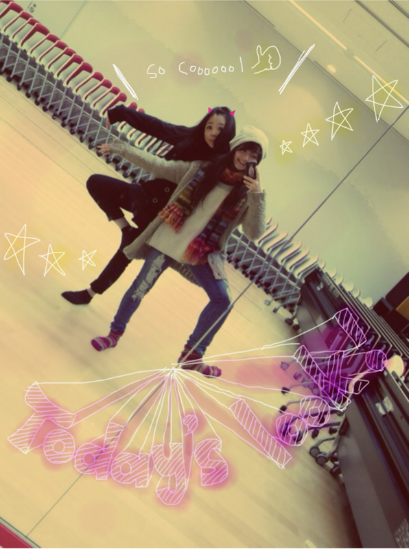

| 2012/01 19 Thu | 54回目*marika |
こんばんはまりかよ。
いつも読んでくださってる方、
初めて読んでくださった方、
コメントしてくださった方、
ありがとうございます!!
乃木メンが風邪に苦しんでます.......
うあああぁぁあぁ!!!!!
xO
頑張って治さな><
今日はみんなに心配かけてしまった。
顔まっかだったみたいだけど、
熱は出てないの。
ん〜...こわいな><
あっっっっっ!!!!!
ずっと報告するの忘れてました!!
口内炎が--...
治った!!やっほいびょんびょん
みなさんにコメントで
口内炎の調子を心配してくださってて...;(
やっとニカッと笑える。
歯茎に当たって痛かった
厄介なやつは消えた。
やっほいびょんびょん↑↑
しゃしん＊
はい
ででん！

伊藤ちゃんず。
ねねころのころりんちゃんですがね...
もうね、
かわいすぎてきゅんきゅんしてます♡
ま「最近私の前髪りりしくなってきてない!!?」
ね スパッと「んん。そーでもないね」
なんでこんなあっさりしてるのよ笑
あさりちゃんて呼ぶぞ。ぇ
today's look!
mahiro ＆ marika

この帽子お気に♪
ロングニットカーデはParAvion♡
体調悪かったのに
真洋としゃべったら元気になった^^♡
しゃべるとおんなじ空気になるんよね。
うっふふーてね。笑
真洋のファッションはかっこいい系。
ん、モノトーン似合う☆
*******
カップリングの曲
『会いたかったかもしれない』
.....マイナーロック調でかっこよいです^^
AKB48さんの
『会いたかった』
と雰囲気が全く違っていて
最初はびっくりしました!!
『会いたかった』は
オーディションを受ける前から
友達と踊ってました。♪
実際オーディションでも踊ったので
だいすき♡♡
乃木坂46の
『会いたかったかもしれない』
みなさん、聴いてみてどうでしたか?
何回も聴いたら、はまっちゃうかも:D
*******
質問はまたまとめて返します><
今日もお疲れさまりか＊
風邪なんて気合いで治したる。!
風邪をひいているみなさんも
気合いで治そう。
風邪ひいてない方も
注意してくださいね><
インフルエンザも流行ってるみたいなので...
では!明日も頑張りまりか:)
では!おやすみなさい ☆

LOVE
ベビたん*****bA by marika